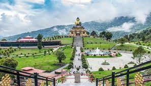

EXPLORE INCREDIBLE INDIA WITH RK CONCEPTS
BEST TOURIST PLACES TO VISIT IN EAST INDIA
EAST INDIA
SHILLONG
Best time to visit : March to June
Best places to visit :
David Scott Trail
Elephant Falls
Umiam Lake
Mawjymbuin Cave
Shillong Peak & View Point
Don Bosco Museum
Ward’s Lake
Phan Nonglait Park
Sweet Falls
Mawphlang Sacred Forest
Room Tarrif : 2000/- to 4000/-
CHERRAPUNJI
Shillong to Cherrapunji : 53.7 km
Best time to visit : October to February
Best places to visit :
Double Decker Living Root Bridges
Mawsmai Falls
Mawsmai caves
Mawsynram Village(Where Rain Gods Rest)
Dawki
Kynrem Falls
Nohkalikai falls(4th highest waterfall in world)
Dainthlen Waterfalls
Seven Sisters Waterfall, Nohsngithiang(tallest waterfall in India)
Krem Mawmluh
Mawkdok Dympep Valley View
Room Tarrif : 2000/- to 4000/-
WILLIAMNAGAR
Shillong to Williamnagar : 243.1 km
Best time to visit : October to February
Best places to visit :
Naka-chikong
Domre Falls
Simsang river
Mokma dare
Tasek lake
kyllang rock
Jowai waterfalls
Room Tarrif : 1900/- to 3800/-
GUWAHATI
Best time to visit : October to March
Best places to visit :
Umananda Temple(5.30am to 6pm) 20/- per person
Kamakhya Temple(8am to 5pm)
Pobitora Wildlife Sanctuary(jeep safari : 2000/-)
Dipor Bil(13km)
Kaziranga National Park(50/- per person)
Nehru Park(10am to 8pm) 10/- per person
Madan Kamdev(40km)
Room Tarrif : 2300/- to 3800/-
JORHAT
Guwahati to Jorhat : 304.1 km
Best time to visit : October to March
Best places to visit :
Majuli(Island in brahmnaputra river)
Hoollongapar gibbon wildlife scantuary
Nimati ghat
Cinnamora Tea Estate(first tea estate of assam)
Sukapha Samannay Kshetra
Molai Forest(one-man forest)
Kakochang Waterfalls
Room Tarrif : 2000/- to 3800/-
Sontipur
Guwahati to Sontipur : 184.1 km
City of blood
Best time to visit : October to March
Best places to visit :
Tezpur(social capital of assam)
Wireless Hill View Point Maligaon
Patarkuchi Tiniali
Maa Kamakhya temple
Ramakrishna mission temple
Highest view point
Tinsukia(Industrial town)
Room Tarrif : 2300/- to 3800/-
DIBRUGARH
Guwahati to Dibrugarh : 441 km
Best time to visit : October to March
Best places to visit :
Bogibeel Bridge
Jagannath temple
Blossam exotica
Radha krishna mandir
Dibrugarh phoolbagan
Room Tarrif : 2100/- to 3200/-
Sivasagar
Guwahati to Sivasagar : km
Best time to visit : October to March
Best places to visit :
Nagaon
Dispur
Silchar
Kaziranga National Park
Digboi(oil city of assam)
Bogamati(Indo-bhutan border)
Room Tarrif : 2300/- to 3800/-
TAWANG
Itanagar to Tawang : 442.9 km
Best time to visit : October to March
Best places to visit :
Sela Pass
Bumla Pass
Tawang Buddhist Monastery
Tawang War Memorial
Nuranang Falls
Madhuri Lake
Jaswant Garh
Thingbu Hot Spring
Gyangong Ani Gompa
Gorsam Chorten
Thingbu Hot Spring
Room Tarrif : 3100/- to 5800/-
PASIGHAT
Itanagar to Pasighat : 262.1 km
Best time to visit : October to March
Best places to visit :
Ziro
Roing
Daying Ering Wildlife Sanctuary
Pangin
Kekar Monying
Rafting in Pasighat
Room Tarrif : 2100/- to 4000/-
River rafting : Rafting Route: Pasighat–Jengging–Tuting–Pango–Cherring–Paradise Beach–Geku Twin Camps–Rotung–Pasighat --> ₹6,000 (including breakfast)
ITANAGAR
Best time to visit : September to October
Best places to visit :
Ganga Lake
Ita Fort
Gompa Buddhist Temple
Itanagar Wild Life Sanctuary
Rupa
Biological park Itanagar
Room Tarrif : 2500/- to 3500/-
TEZU
Itanagar to Tezu : 362.7 km
Best time to visit : September to October
Best places to visit :
Dibang wildlife Sanctuary
Dong
Glow Lake
Parasuram Kunda
Chaglogam
Hawai and Hayuliang
Hawa Camp
Room Tarrif : 2700/- to 3800/-
IMPHAL

Guwahati to : km
Best time to visit : September to April
Best places to visit :
Churachndpur
Kakching (celebrating each day)
Dzukou valley (made of dreams)
Leimaram waterfalls (pictursque trio waterfalls)
Bishnupur (Hub of places to worship)
Room Tarrif : 2300/- to 3800/-
ANDRO
Imphal to Andro : 23.5 km
Best time to visit : September to April
Best places to visit :
Senapati (cultural insight)
Khongjom (remembering the brave legends)
Ukhrul (where tranquility prevails)
Chandel (nature's mystique)
Thoubal (trekker's paradise)
Tamenglong (land of Hornbill)
Room Tarrif : 2000/- to 3800/-
AIZWAL
Guwahati to : km
Best time to visit : October to March
Best places to visit :
Lunglei
Kolasib
Reiek
Vantawng waterfalls
Falkawn Village
Phawngpui
Tamdil Lake
Room Tarrif : 2300/- to 3800/-
MAMIT
Aizwal to Mamit : 87.7 km
Best time to visit : October to March
Best places to visit :
Hmuifang
Serchhip
Champhai
Saiha
Murlen national park
Dampa tiger reserve
Phawngpui peak
Room Tarrif : 2300/- to 3800/-
TRIPURA
Best time to visit : April to July
Best places to visit :
Unakoti
Neermahal Palace
Ujjayanta Palace
Heritage park
Tripura goverement museum
Sundari temple
Kamaleshwari temple
Room Tarrif : 1300/- to 3800/-
AGARTALA
Tripura to Agartala : 85 km
Best time to visit : April to July
Best places to visit :
Jagannath Temple
Jampui hill
Chittagong hills
Kunjanban palace
Ummaneshwar temple
Room Tarrif : 2300/- to 3800/-
KOHIMA
Best time to visit : October to May
Best places to visit :
Dimapur
Zunheboto
Phek
Dzukou Valley
Touphema Village
Naga Heritage Village
Room Tarrif : 2000/- to 3800/-
WOKHA
Kohima to Wokha : 73.8 km
Lady of plenty
Best time to visit : October to April
Best places to visit :
Pfutsero
Japfu Peak
Kachari Ruins
Chumukedima Village
Room Tarrif : 2300/- to 3800/-
MOKOKCHUNG
Kohima to Mokokchung : 143.7 km
Best time to visit : Mid-september to November
Best places to visit :
Mon(rich tribal)
Benreu
Khonoma Green Village
Meluri(Fascinating Rock Formations)
Tuensang
Longleng(Thrill-seekers Heaven)
Kiphire
Room Tarrif : 2800/- to 3800/-
SILIGURI
Best time to visit : October to February
Best places to visit :
Pelling
Hong kong market
Bengal safari
Kanchenjunga stadium
Salugara Monastery
ISKCON Temple
Chilapata Forests
Room Tarrif : 3100/- to 5800/-
GANGTOK
Silliguri to Gangtok : 112.3 km
Best time to visit : March to June
Best places to visit :
Hanuman tok
MG Marg
Nathula Pass
Ranka Monastery
Tsomgo Lake
Rumtek Monastery
Ganesh tok
Tashi viewpoint
Room Tarrif : 2500/- to 3800/-
DARJEELING
Silliguri to Darjeeling : 62.5 km
Best time to visit : April to June
Best places to visit :
Peace pagoda
Rock garden
Tiger hill
Batasia Loop
Ghum Monastery
Singalila
, Nightingale Park
Room Tarrif : 2900/- to 6800/-
RANCHI
Best time to visit : October to March
Best places to visit :
Pahari mandir
Dassam Falls
Tagore hills
Hundru waterfall
Sun temple
Ranchi lake
Nakshatra van
Room Tarrif : 2100/- to 3800/-
JAMSHEDPUR
Ranchi to Jamshedpur : 126.1 km
Best time to visit : October to March
Best places to visit :
Jonha falls
Pahral mandir
Rock garden
Jubllee park
Damla wildlife scantuary
TATA Steel zoological park
Sir Dorabji Tata park
Room Tarrif : 1900/- to 3800/-
DHANBAD
Ranchi to Dhanbad : 156.3 km
Best time to visit : October to March
Best places to visit :
Bhatinda Fall
Maithan Dam
Shakti Mandir
Topchanchi Wildlife Sanctuary
Dimna lake
Patratu valley
Parasnath hills
Room Tarrif : 1900/- to 3800/-
KOLKATA
Best time to visit : October to March
Best places to visit :
Victoria Memorial Hall
Dakshineswar Kali Temple
Howrah Bridge
Mother House
Park Street
Birla Planetarium
Fort William Kolkata
Indian Museum
Room Tarrif : 3000/- to 5000/-
BIRBHAM
SEAT OF RABINDRANATH TAGORE
Best time to visit : October to March
Best places to visit :
Cooch Behar Palace.
Darjeeling Himalayan Railway ("Toy Train")
Hazarduari Palace
Adina Mosque
Gaur
Shantiniketan
Bishnupur Terracotta Temples
Room Tarrif : 2500/- to 3800/-
DIGHA
Kolkata to Digha : 184.6 km
Best time to visit : October to February
Best places to visit :
Talseri Beach
Udaipur Beach
Shankarpur Beach
Marine Aquarium
Mohona watch point
Digha gate
Room Tarrif : 2200/- to 4000/-
JAGANNATH PURI
Best time to visit : June to March
Best places to visit :
Shree Jagannath Temple
Puri Beach
Konark Beach
Chilika Lake
Markandeswara Temple
Narendra Sarovara
Pipili
Room Tarrif : 1600/- to 3000/-
BRAHMAPUR
Puri to Brahmapur : 172.7 km
Best time to visit : October to June
Best places to visit :
Taratarini Temple
Maa Bhairavi Temple
Pati Sonepur Beach
ISKCON Brahmapur
Sri Sri Radha Radhakant Mahaprabhu Temple
Biranchi Narayan Temple
Room Tarrif : 1300/- to 3800/-
RAIPUR
Best time to visit : October to March
Best places to visit :
Mahant Ghasidas Memorial Museum
Urja park
Vivekananda Sarovar
Nandan Van Zoo
Room Tarrif : 2300/- to 3800/-
BHILAI
Raipur to Bhilai : 32.9 km
Best time to visit : October to March
Best places to visit :
Atal nagar
Jagdalpur
Surya treasure mall
Arjuna's rath
Shree sai mandir sai baba
Room Tarrif : 2300/- to 3800/-
AMBIKAPUR
Raipur to Ambikapur : 343.2 km
Best time to visit : October to June
Best places to visit :
Shivpur Shiv Temple
Jogimara Caves
Rakasganda Fall
Tiger Point
Surguja Palace(TS Palace)
Oxygen park(Lover point)
Tattapani
Room Tarrif : 2800/- to 4000/-
PATNA
Best time to visit : October to March
Best places to visit :
Takt sri harmandir saheb ji
Nalanda
Sanjay gandhi botinical garden
Patna Museum
Pawapuri
Buddha smriti park
Room Tarrif : 2500/- to 3800/-
GAYA
Patna to Gaya : 117.3 km
Best time to visit : October to March
Best places to visit :
Vishnupad Temple
Mangla Gauri Temple
Rajayatna Tree
Tibetan Monastery
Pind Daan Gaya
Bodhi Tree
Great Buddha Statue
Room Tarrif : 2300/- to 3800/-
PURNIA
Patna to Purnia : 303.6 km
Best time to visit : October to March
Best places to visit :
Jalalgarh Fort.
Manihari
Forbesganj
Puran Devi Maa Temple
Line Bazaar
Mata Asthan Purnea
Room Tarrif : 2300/- to 3800/-